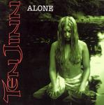

| Artist: | Ten Jinn |
| Title: | Alone |
| Label: | Sweden Records SSR 009 |
| Length(s): | 62 minutes |
| Year(s) of release: | 2004 |
| Month of review: | [08/2004] |
| 1) | Who You Are | 5.42 |
| 2) | Alone | 5.00 |
| 3) | Never Ending Love | 5.17 |
| 4) | Felis Feminalis | 4.21 |
| 5) | Goodbye My Love | 4.22 |
| 6) | Legend Of Green | 3.14 |
| 7) | How It Goes | 5.57 |
| 8) | Too Late Now | 4.53 |
| 9) | I'll Be There | 4.23 |
| 10) | Something Going Wrong | 4.00 |
| 11) | What Are You Gonna Do | 4.04 |
| 12) | Killing Me Slowly | 4.05 |
| 13) | In The End | 6.00 |
Alone is more of a ballad. The keys are now a pleasant organ sound and the guitars are more rock than hardrock. Strauss's vocals remain a bit of a problem though, he opens his throat rather widely, but misses out on articulation, making the impression that Singing this material is outside his technical abilities. And what's worse: sounding shouty. This effect can also be seen on James LaBrie's live vocals. Strauss also seems to want to avoid having to hold a note, easily making "I" into a five syllable word.
The two tracks more or less set up the perimeters of the terrain in which most of the music on this album moves around. The guitars are constantly rocky, as are most of the compositions, at least more than they are progressive. The drum sound is quite rock too. The blaring synths of the opener are scarce, thankfully, most of the time the keys have a warm Hammond sound. And of course those vocals. Maybe they are an acquired taste, but I can't help being appalled about the guy's technique. Or lack thereof.
There are some exceptions to the standard pattern: Legend Of Green is a friendly sounding instrumental with keys and acoustics. Rather open and simple, showing the band from a different angle. What Are You Gonna Do starts acoustic guitar with multiple vocals, mostly whining, towards the climax power is restored.
I'll Be There has a decent enough guitar solo, but the rest of the track isn't strong enough to prolong this effect. The chorus of Goodbye My Love has some nice melodic bends.